📿 金刚般若波罗蜜经 · 三十二品整体脉络
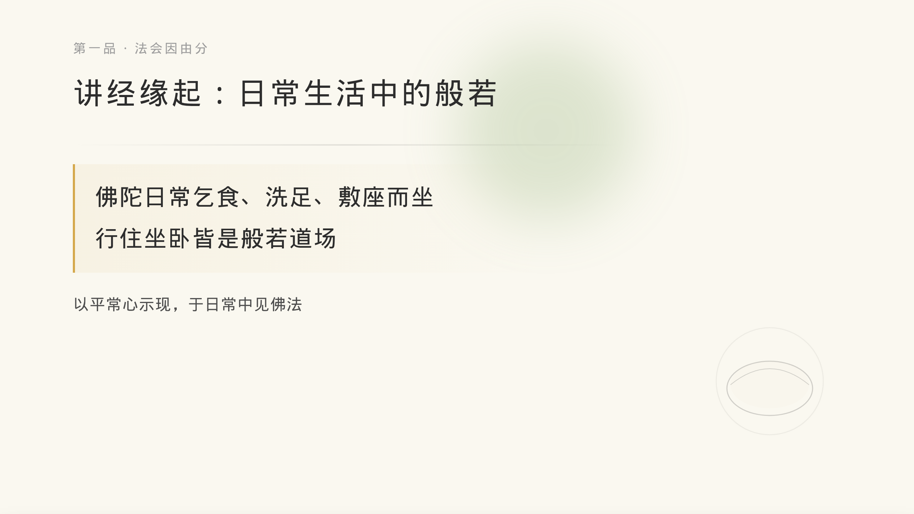
2 · 第一品 · 讲经缘起
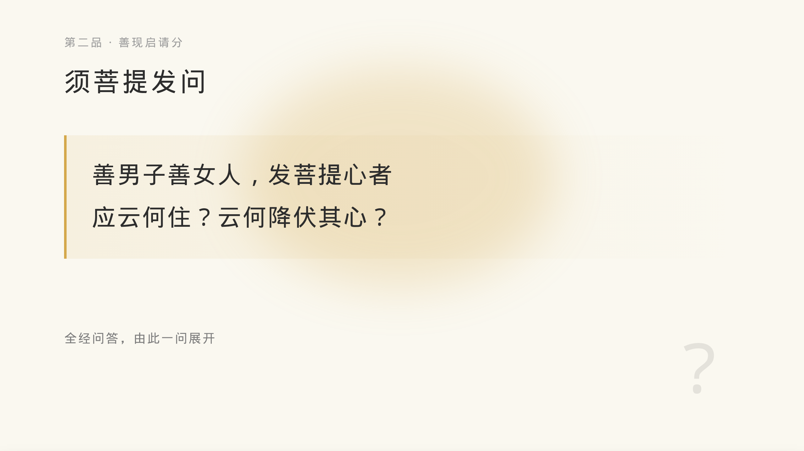
3 · 第二品 · 须菩提发问
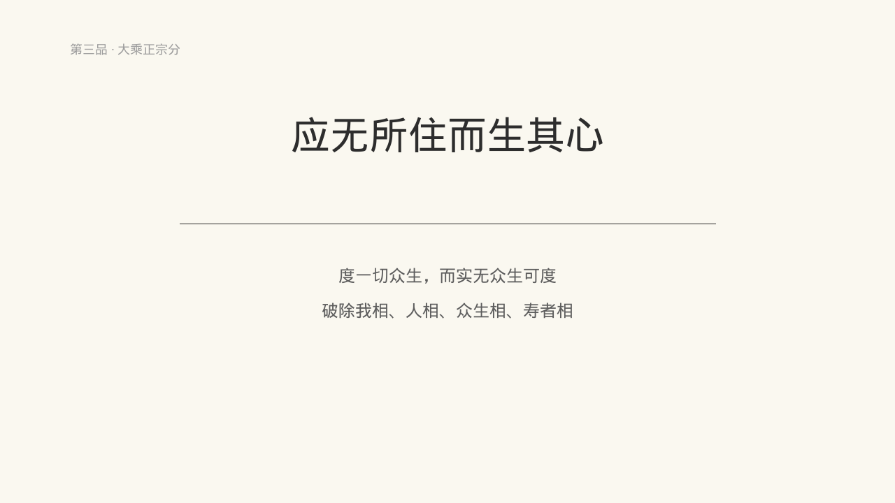
4 · 第三品 · 应无所住而生其心
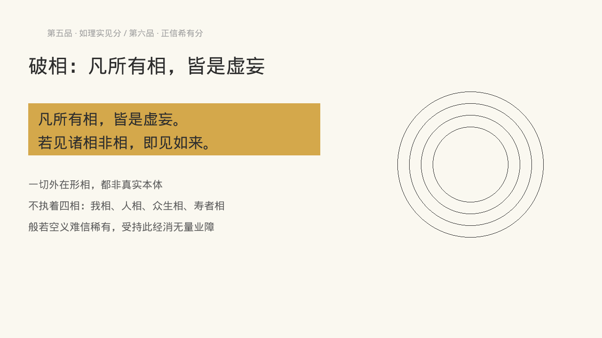
5 · 第五~六品 · 破相
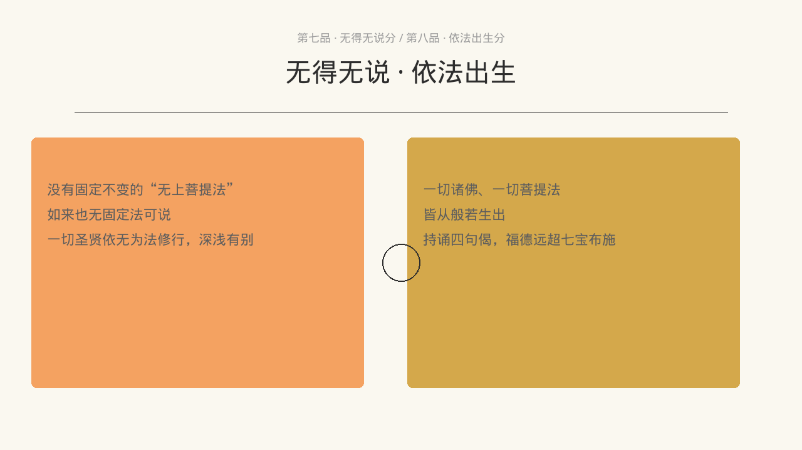
6 · 第七~八品 · 无得无说
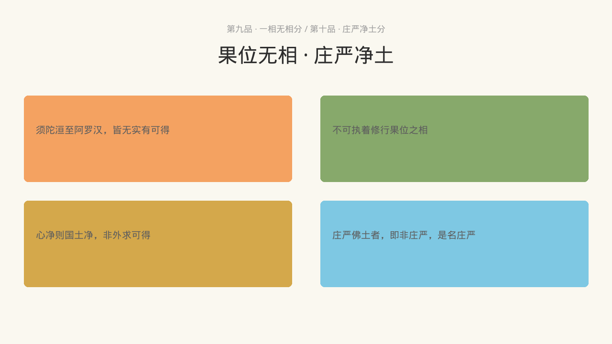
7 · 第九~十品 · 果位无相
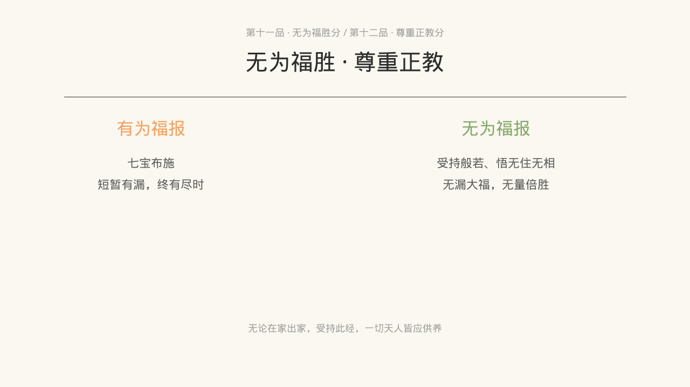
8 · 第十一~十二品 · 无为福胜
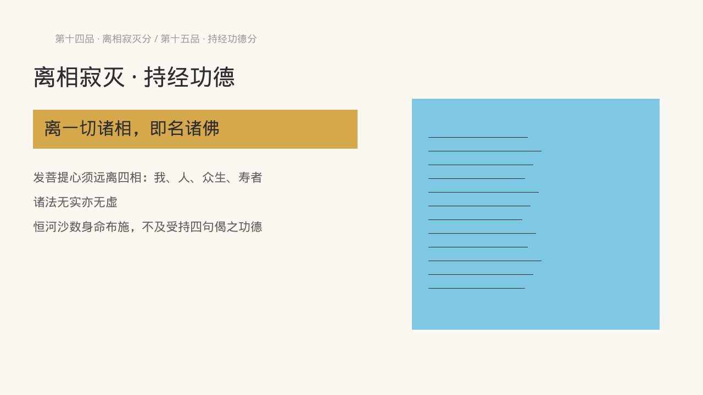
9 · 第十四~十五品 · 离相寂灭
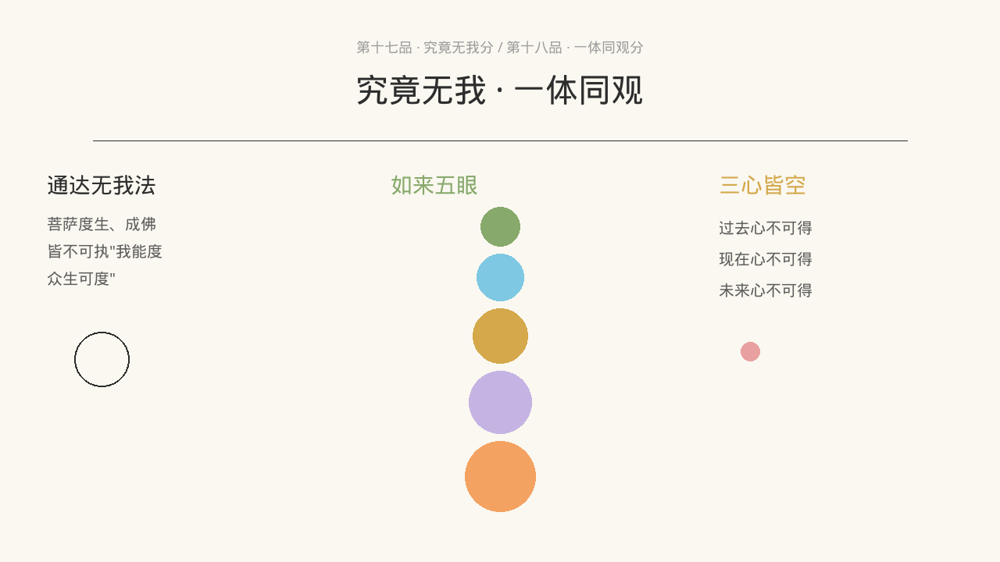
10 · 第十七~十八品 · 究竟无我
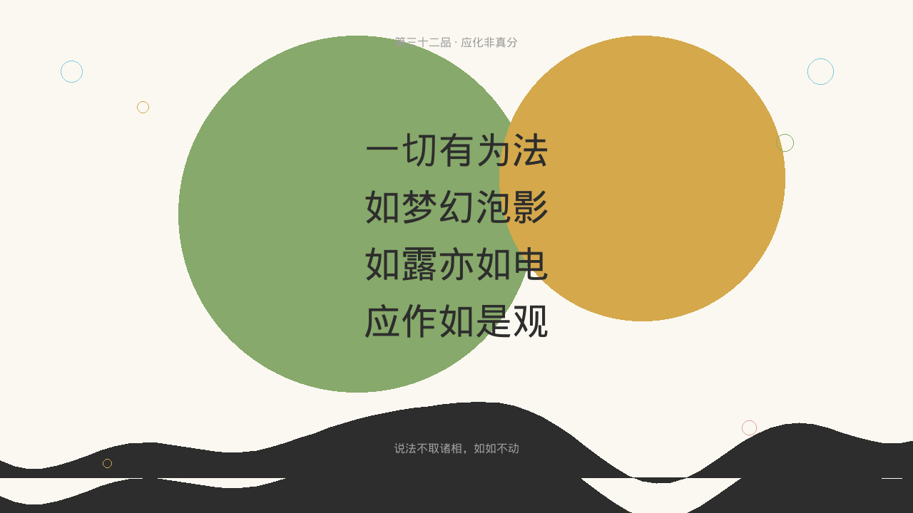
11 · 第三十二品 · 核心偈
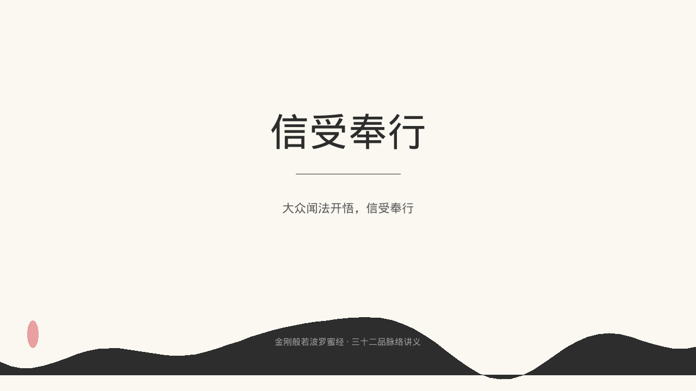
12 · 封底 · 信受奉行